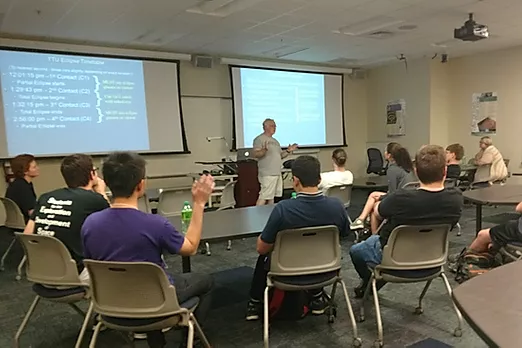
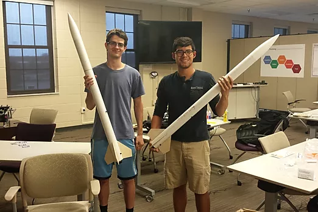
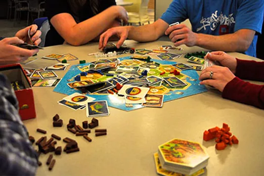

Tennessee Tech SEDS
Students for the Exploration and Development of Space
SEDS at Tennessee Tech is a club led by students for students for the development and exploration of space. Currently the club participates in projects in amateur rocketry, high altitude balloons, radio communications, and telescope/radio imaging. We are also always interested in hosting or sponsoring different projects, and we welcome additional project suggestions. TNTech SEDS is a chapter of the larger SEDS USA which has chapters in several different colleges and high schools listed below:
SEDS USA is 501(c)3 non-profit organization dedicated to the evolution and expansion of space in the academic and professional sectors. SEDS was founded as a chapter-based organization in 1980 by Peter Diamandis, Scott Scharfman, and Richard Sorkin. It is the largest student-run space organization in the world and consists of an international community of high school, undergraduate, and graduate students from a diverse range of educational backgrounds in chapters all over the world. The SED-USA mission statement embodies everything we strive for in TnTECH SEDS, and so we adopt it as our mission statement with a few differences shown in PURPLE:
Mission Statements
Tennessee Tech Students for the Exploration and Development of Space (TNTECHSEDS) is an organization that empowers young people to participate and make an impact in space exploration, and to discover a passion for space with other space enthusiastic students. SEDS helps students develop their technical and leadership skills by providing opportunities to manage and participate in national projects as well as to attend conferences, publish their work, and develop their professional network, in order to help students become more effective in their present and future careers in industry, academia, government, and education.
Club Meetings
Club meetings take place every Wednesday night at 7 PM during semesters, and usually last till 9 PM. The meetings will usually follow one of two schedule types: General or Project, or some combination of the two. Occasionally there will also be Game Nights for members to come relax and play games. Updates about meetings will be posted to the student discord, student email, and on the website homepage. Members and non-members are welcome to come to any meeting.
General Meetings
General meetings will feature an event speaker or a presentation from one of the student members. The meeting itinerary will include club updates, event changes, and space news from the week.
Project Meetings
Project meetings are frequent in the spring semester when club projects are coming to an end. Project meetings offer members a reserved time to work on club projects, and help to keep projects on schedule
Game Nights
Once or twice a semester the club will come together and play board games or have a paper airplane competition. Occasionally the club will also have Game Nights in collaboration with other TNTech clubs.
Officers
Joshua Daugherty
President
Joshua is a masters student in mechanical engineering. He once flew an RC-helicopter and didn't crash it, so he figured he could probably run a club about space. He has taken several classes in fluid dynamics and knows far too much for his own good. Joshua runs the meetings and generally keeps the club running. Do not ask him questions about fluids, and if he starts talking about it on his own RUN AWAY!!!
Parker Waugh
Vice President
Parker is an undergrad student in mechanical engineering. He currently holds a level 2 rocketry certification, and is building a rocket for his level 3 attempt. As vice president Parker is required to cover any of the president's roles that he can not fulfill by himself. Running a club can be hard sometimes, okay? Parker is also the undisputed best-dressed officer of the hour, every hour.
Jim Maroney
Secretarty
Jim is an undergrad student in computer engineering. Because of his horn-rimmed glasses, Jim was the obvious choice for secretary. Jim's position includes several duties such as taking role, keeping the schedule and the website up to date, and reminding people that single-use plastic is wack.
Jackie McWhorter
Project Manager
Jackie is the project manager for the club. When the club is in the middle of a lot of projects, Jackie is quite busy. When the club is not doing a lot of projects, you can find a bored-looking Jackie in the library or in Prescott. Project manager works with each of the project leaders to make sure deadlines will be met, and funding is properly allocated.
Caroline Eills
Treasurer
Caroline is an undergrad student in chemical engineering. Caroline recently completed a project where she carbonated sodas with yeast. She discovered that when you forget about yeast-carbonating sodas, eventually they can explode. Caroline is in charge of making sure dues are paid and funding deadlines are met. Members that forget to pay dues to Caroline get what is coming to them. You have been warned.
Nick Morse
Outreach Coordinator
Nick is an undergrad student in electrical engineering. Nick is in charge of keeping the club active on the various social medias and reaching out to find event speakers, other SEDS organizations, and administrations in the school. It may sound like this is a lot for one person, but then on the other hand it is just a bunch of browsing on Facebook.